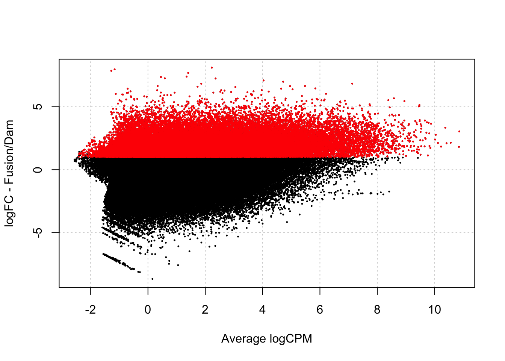
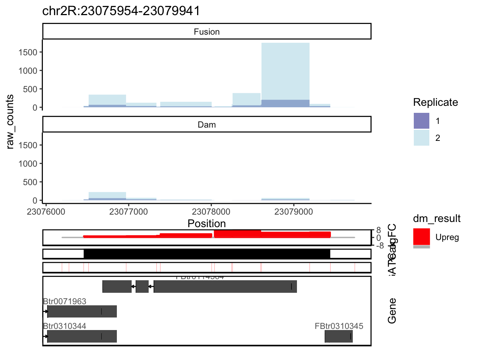

Last updated: 2024-10-07
Checks: 7 0
Knit directory: damsel_paper/analysis/
This reproducible R Markdown analysis was created with workflowr (version 1.7.1). The Checks tab describes the reproducibility checks that were applied when the results were created. The Past versions tab lists the development history.
Great! Since the R Markdown file has been committed to the Git repository, you know the exact version of the code that produced these results.
Great job! The global environment was empty. Objects defined in the global environment can affect the analysis in your R Markdown file in unknown ways. For reproduciblity it’s best to always run the code in an empty environment.
The command set.seed(20240816) was run prior to running
the code in the R Markdown file. Setting a seed ensures that any results
that rely on randomness, e.g. subsampling or permutations, are
reproducible.
Great job! Recording the operating system, R version, and package versions is critical for reproducibility.
Nice! There were no cached chunks for this analysis, so you can be confident that you successfully produced the results during this run.
Great job! Using relative paths to the files within your workflowr project makes it easier to run your code on other machines.
Great! You are using Git for version control. Tracking code development and connecting the code version to the results is critical for reproducibility.
The results in this page were generated with repository version 772ba6b. See the Past versions tab to see a history of the changes made to the R Markdown and HTML files.
Note that you need to be careful to ensure that all relevant files for
the analysis have been committed to Git prior to generating the results
(you can use wflow_publish or
wflow_git_commit). workflowr only checks the R Markdown
file, but you know if there are other scripts or data files that it
depends on. Below is the status of the Git repository when the results
were generated:
Ignored files:
Ignored: .DS_Store
Ignored: .Rhistory
Ignored: .Rproj.user/
Ignored: data/.DS_Store
Ignored: renv/library/
Ignored: renv/staging/
Untracked files:
Untracked: code/helper-vissers.R
Untracked: data/damsel_counts.rds
Untracked: data/damsel_counts_a.rds
Untracked: data/damsel_counts_b.rds
Untracked: data/sd_1_SRR794884-vs-Dam.kde-norm.gatc-FDR0.01.peaks.gff
Untracked: data/sd_2_SRR7948877-vs-Dam.kde-norm.gatc-FDR0.01.peaks.gff
Untracked: data/txdb_genes.rds
Untracked: output/damsel_dm.rds
Untracked: output/damsel_genes.rds
Untracked: output/damsel_peaks.rds
Untracked: output/fp_vissers_peaks.txt
Untracked: output/keep
Untracked: output/lrt_sd.txt
Untracked: output/marshall_peaks.rds
Untracked: output/peaks.txt
Untracked: output/vissers_dm.rds
Untracked: output/vissers_peaks.rds
Untracked: output/vissers_peaks.txt
Untracked: output/vissers_peaks_mod.rds
Untracked: outputvenn_plot.png
Untracked: renv/.gitignore
Unstaged changes:
Modified: code/run-Damsel.R
Modified: code/run-Vissers.R
Modified: renv.lock
Note that any generated files, e.g. HTML, png, CSS, etc., are not included in this status report because it is ok for generated content to have uncommitted changes.
These are the previous versions of the repository in which changes were
made to the R Markdown (analysis/run-Damsel.Rmd) and HTML
(docs/run-Damsel.html) files. If you’ve configured a remote
Git repository (see ?wflow_git_remote), click on the
hyperlinks in the table below to view the files as they were in that
past version.
| File | Version | Author | Date | Message |
|---|---|---|---|---|
| Rmd | 772ba6b | caitlinpage | 2024-10-07 | wflow_publish(c("analysis/compare_dm.Rmd", "analysis/fp-test.Rmd", |
| html | dca9f3a | caitlinpage | 2024-10-01 | Build site. |
| Rmd | 026678f | caitlinpage | 2024-10-01 | wflow_publish(c("analysis/run-Damsel.Rmd", "analysis/run-Vissers.Rmd")) |
| Rmd | 4dc6744 | caitlinpage | 2024-10-01 | minor update |
| Rmd | 247ab1b | caitlinpage | 2024-08-16 | init commit |
#renv::install("bioc::Damsel")
library(Damsel)
library(plyranges)Loading required package: BiocGenerics
Attaching package: 'BiocGenerics'The following objects are masked from 'package:stats':
IQR, mad, sd, var, xtabsThe following objects are masked from 'package:base':
anyDuplicated, aperm, append, as.data.frame, basename, cbind,
colnames, dirname, do.call, duplicated, eval, evalq, Filter, Find,
get, grep, grepl, intersect, is.unsorted, lapply, Map, mapply,
match, mget, order, paste, pmax, pmax.int, pmin, pmin.int,
Position, rank, rbind, Reduce, rownames, sapply, setdiff, table,
tapply, union, unique, unsplit, which.max, which.minLoading required package: IRangesWarning: package 'IRanges' was built under R version 4.4.1Loading required package: S4VectorsWarning: package 'S4Vectors' was built under R version 4.4.1Loading required package: stats4
Attaching package: 'S4Vectors'The following object is masked from 'package:utils':
findMatchesThe following objects are masked from 'package:base':
expand.grid, I, unnameLoading required package: GenomicRangesLoading required package: GenomeInfoDb
Attaching package: 'plyranges'The following object is masked from 'package:IRanges':
sliceThe following object is masked from 'package:stats':
filterlibrary(dplyr)
Attaching package: 'dplyr'The following objects are masked from 'package:plyranges':
between, n, n_distinctThe following objects are masked from 'package:GenomicRanges':
intersect, setdiff, unionThe following object is masked from 'package:GenomeInfoDb':
intersectThe following objects are masked from 'package:IRanges':
collapse, desc, intersect, setdiff, slice, unionThe following objects are masked from 'package:S4Vectors':
first, intersect, rename, setdiff, setequal, unionThe following objects are masked from 'package:BiocGenerics':
combine, intersect, setdiff, unionThe following objects are masked from 'package:stats':
filter, lagThe following objects are masked from 'package:base':
intersect, setdiff, setequal, unionlibrary(ggplot2)
library(BSgenome.Dmelanogaster.UCSC.dm6)Loading required package: BSgenomeLoading required package: BiostringsLoading required package: XVector
Attaching package: 'Biostrings'The following object is masked from 'package:base':
strsplitLoading required package: BiocIOLoading required package: rtracklayer
Attaching package: 'rtracklayer'The following object is masked from 'package:BiocIO':
FileForFormatlibrary(TxDb.Dmelanogaster.UCSC.dm6.ensGene)Loading required package: GenomicFeaturesLoading required package: AnnotationDbiLoading required package: BiobaseWelcome to Bioconductor
Vignettes contain introductory material; view with
'browseVignettes()'. To cite Bioconductor, see
'citation("Biobase")', and for packages 'citation("pkgname")'.
Attaching package: 'AnnotationDbi'The following object is masked from 'package:dplyr':
selectThe following object is masked from 'package:plyranges':
selectlibrary(org.Dm.eg.db)gatc_regions_and_sites <- getGatcRegions(BSgenome.Dmelanogaster.UCSC.dm6::BSgenome.Dmelanogaster.UCSC.dm6)Warning in .local(x, row.names, optional, ...): 'optional' argument was ignored
Warning in .local(x, row.names, optional, ...): 'optional' argument was ignored
Warning in .local(x, row.names, optional, ...): 'optional' argument was ignored
Warning in .local(x, row.names, optional, ...): 'optional' argument was ignored
Warning in .local(x, row.names, optional, ...): 'optional' argument was ignored
Warning in .local(x, row.names, optional, ...): 'optional' argument was ignored
Warning in .local(x, row.names, optional, ...): 'optional' argument was ignoredWarning in GenomeInfoDb::renameSeqlevels(x = df_, value = newStyle): invalid
seqlevels 'chrM' ignoredgatc_regions <- gatc_regions_and_sites$regionsdamsel_counts <- rbind(readRDS("../data/damsel_counts_a.rds"), readRDS("../data/damsel_counts_b.rds"))
head(damsel_counts) Position seqnames start end width strand dam_1_SRR7948872.BAM
chr2L-82 chr2L-82 chr2L 82 230 149 * 1.0
chr2L-231 chr2L-231 chr2L 231 371 141 * 1.5
chr2L-372 chr2L-372 chr2L 372 539 168 * 2.5
chr2L-540 chr2L-540 chr2L 540 688 149 * 2.0
chr2L-689 chr2L-689 chr2L 689 829 141 * 0.0
chr2L-830 chr2L-830 chr2L 830 997 168 * 0.0
sd_1_SRR7948874.BAM dam_2_SRR7948876.BAM sd_2_SRR7948877.BAM
chr2L-82 0.33 0.0 0.0
chr2L-231 5.67 87.0 57.5
chr2L-372 6.17 88.0 58.5
chr2L-540 4.83 0.0 0.0
chr2L-689 0.00 0.5 0.5
chr2L-830 1.33 4.5 3.5damsel_dge <- makeDGE(damsel_counts, min.samples = 2)
damsel_dgeAn object of class "DGEList"
$counts
dam_1_SRR7948872.BAM sd_1_SRR7948874.BAM dam_2_SRR7948876.BAM
chr2L-231 1.50 5.67 87.00
chr2L-372 2.50 6.17 88.00
chr2L-5154 6.50 10.83 15.50
chr2L-5303 43.17 53.67 143.00
chr2L-6025 68.17 66.75 283.33
sd_2_SRR7948877.BAM
chr2L-231 57.50
chr2L-372 58.50
chr2L-5154 17.33
chr2L-5303 174.00
chr2L-6025 283.33
150667 more rows ...
$samples
group lib.size norm.factors
dam_1_SRR7948872.BAM Dam 10512144 1.6910206
sd_1_SRR7948874.BAM Fusion 9461367 0.8364629
dam_2_SRR7948876.BAM Dam 52113267 1.2253711
sd_2_SRR7948877.BAM Fusion 53474085 0.5769481
$genes
seqnames start end width
chr2L-231 chr2L 231 371 141
chr2L-372 chr2L 372 539 168
chr2L-5154 chr2L 5154 5302 149
chr2L-5303 chr2L 5303 6024 722
chr2L-6025 chr2L 6025 6880 856
150667 more rows ...
$design
(Intercept) group V2
1 1 1 1
2 1 2 1
3 1 3 0
4 1 4 0
attr(,"assign")
[1] 0 1 2
$common.dispersion
[1] 0.02087227
$trended.dispersion
[1] 1.438293e-02 1.472771e-02 9.765625e-05 1.969004e-02 2.188058e-02
150667 more elements ...
$tagwise.dispersion
[1] 1.766429e-02 1.708774e-02 9.765625e-05 1.849581e-02 2.081276e-02
150667 more elements ...
$AveLogCPM
[1] 0.3126126 0.3499100 -0.9467345 2.0053520 2.6715574
150667 more elements ...
$trend.method
[1] "locfit"
$prior.df
[1] 33.54115 35.87442 38.50457 38.50457 38.50457
150667 more elements ...
$prior.n
[1] 33.54115 35.87442 38.50457 38.50457 38.50457
150667 more elements ...
$span
[1] 0.2636625matrix <- as.matrix(damsel_counts[, grepl("bam", colnames(damsel_counts), ignore.case = TRUE)])
rownames(matrix) <- damsel_counts$Position
n_samples <- seq_len(ncol(matrix) / 2)
group <- rep(c("Dam", "Fusion"), times = length(n_samples))
design_df <- seq_len(ncol(matrix)) %>%
data.frame() %>%
stats::setNames("group")
zero_vec <- rep(0, times = length(n_samples))
for (i in n_samples) {
design <- replace(zero_vec, i, 1)
design <- rep(design, each = 2)
design_df[, ncol(design_df) + 1] <- design
}
design <- stats::model.matrix(~., data = design_df[, seq_len(ncol(design_df)) - 1])setNames(design_df, c("num", "group", "replicate")) num group replicate
1 1 1 0
2 2 1 0
3 3 0 1
4 4 0 1model.matrix(~., data=design_df[,2:3]) (Intercept) V2 V3
1 1 1 0
2 1 1 0
3 1 0 1
4 1 0 1
attr(,"assign")
[1] 0 1 2group <- c("Dam", "Sd", "Dam", "Sd")
rep <- c(0,0,1,1)
group[1] "Dam" "Sd" "Dam" "Sd" model.matrix(~group + rep) (Intercept) groupSd rep
1 1 0 0
2 1 1 0
3 1 0 1
4 1 1 1
attr(,"assign")
[1] 0 1 2
attr(,"contrasts")
attr(,"contrasts")$group
[1] "contr.treatment"stats::model.matrix(~., data = design_df[, seq_len(ncol(design_df))]) (Intercept) group V2 V3
1 1 1 1 0
2 1 2 1 0
3 1 3 0 1
4 1 4 0 1
attr(,"assign")
[1] 0 1 2 3damsel_dm <- testDmRegions(damsel_dge, gatc_regions)Warning in plot.xy(xy.coords(x, y), type = type, ...): "panel.first" is not a
graphical parameter
head(damsel_dm) Position seqnames start end width strand number dm logFC PValue
1 chr2L-82 chr2L 82 230 149 * 1 NA 0.0000000 1.0000000
2 chr2L-231 chr2L 231 371 141 * 2 0 0.7107329 0.1050667
3 chr2L-372 chr2L 372 539 168 * 3 0 0.7022162 0.0895547
4 chr2L-540 chr2L 540 688 149 * 4 NA 0.0000000 1.0000000
5 chr2L-689 chr2L 689 829 141 * 5 NA 0.0000000 1.0000000
6 chr2L-830 chr2L 830 997 168 * 6 NA 0.0000000 1.0000000
adjust.p meth_status
1 1.0000000 Not_included
2 0.1393772 No_sig
3 0.1209952 No_sig
4 1.0000000 Not_included
5 1.0000000 Not_included
6 1.0000000 Not_includeddamsel_peaks <- identifyPeaks(damsel_dm)
head(damsel_peaks) peak_id seqnames start end width strand rank_p logFC_match
1 PM_4085 chr2R 23076454 23079441 2988 * 1 8.110543
2 PM_5876 chr3L 16415790 16418210 2421 * 2 6.434905
3 PM_649 chr2L 6963496 6964804 1309 * 3 6.317049
4 PM_4414 chr3L 725698 729301 3604 * 4 6.133288
5 PM_5427 chr3L 12145127 12151419 6293 * 5 6.128638
6 PM_4149 chr2R 23870251 23875317 5067 * 6 5.982543
FDR multiple_peaks region_pos n_regions_dm n_regions_not_dm
1 3.188116e-05 2 chr2R-23078258 11 1
2 3.188116e-05 2 chr3L-16416501 10 1
3 3.188116e-05 2 chr2L-6963496 5 1
4 3.188116e-05 2 chr3L-725698 9 1
5 3.188116e-05 2 chr3L-12149752 19 1
6 3.188116e-05 2 chr2R-23872762 23 1nrow(damsel_peaks)[1] 3120txdb <- TxDb.Dmelanogaster.UCSC.dm6.ensGene
genes <- collateGenes(genes = txdb, regions = gatc_regions, org.Db = org.Dm.eg.db) 1 gene was dropped because it has exons located on both strands of the
same reference sequence or on more than one reference sequence, so
cannot be represented by a single genomic range.
Use 'single.strand.genes.only=FALSE' to get all the genes in a
GRangesList object, or use suppressMessages() to suppress this message.'select()' returned 1:many mapping between keys and columnsTSS taken as start of gene, taking strand into accountgenesGRanges object with 17806 ranges and 4 metadata columns:
seqnames ranges strand | ensembl_gene_id gene_name
<Rle> <IRanges> <Rle> | <character> <character>
[1] chr2L 7529-9484 + | FBgn0031208 CR11023
[2] chr2L 9839-21376 - | FBgn0002121 l(2)gl
[3] chr2L 21823-25155 - | FBgn0031209 Ir21a
[4] chr2L 21952-24237 + | FBgn0263584 asRNA:CR43609
[5] chr2L 25402-65404 - | FBgn0051973 Cda5
... ... ... ... . ... ...
[17802] chrUn_CP007120v1 70955-74924 + | FBgn0267504 28SrRNA:CR45844
[17803] chrUn_DS483646v1 7386-9527 - | FBgn0085692 CG41561
[17804] chrUn_DS483910v1 699-1770 + | FBgn0267596 <NA>
[17805] chrUn_DS484581v1 7-354 - | FBgn0085540 lncRNA:CR40947
[17806] chrUn_DS484898v1 1-740 - | FBgn0267595 <NA>
TSS n_regions
<integer> <numeric>
[1] 7529 3
[2] 21376 33
[3] 25155 8
[4] 21952 6
[5] 65404 93
... ... ...
[17802] 70955 0
[17803] 9527 0
[17804] 699 0
[17805] 354 0
[17806] 740 0
-------
seqinfo: 1870 sequences from an unspecified genome; no seqlengthsdamsel_genes <- annotatePeaksGenes(damsel_peaks, genes, gatc_regions)damsel_peaks[1,] peak_id seqnames start end width strand rank_p logFC_match
1 PM_4085 chr2R 23076454 23079441 2988 * 1 8.110543
FDR multiple_peaks region_pos n_regions_dm n_regions_not_dm
1 3.188116e-05 2 chr2R-23078258 11 1plotCounts(damsel_counts,
seqnames = "chr2R",
start_region = 23076454-500,
end_region = 23079441+500,
log2_scale = FALSE
) +
geom_dm(damsel_dm) +
geom_peak(damsel_peaks) +
geom_gatc(gatc_regions_and_sites$sites) +
geom_genes_tx(genes, txdb)If gene is disproportional to the plot, use gene_limits = c(y1,y2). If gene is too large, recommend setting to c(0,2) and adjusting the plot.height accordingly.Registered S3 method overwritten by 'GGally':
method from
+.gg ggplot2Parsing transcripts...Parsing exons...Parsing cds...Parsing utrs...------exons...------cdss...------introns...------utr...aggregating...DoneConstructing graphics...Scale for y is already present.
Adding another scale for y, which will replace the existing scale.
sessionInfo()R Under development (unstable) (2024-01-17 r85813)
Platform: x86_64-apple-darwin20
Running under: macOS Sonoma 14.1.1
Matrix products: default
BLAS: /Library/Frameworks/R.framework/Versions/4.4-x86_64/Resources/lib/libRblas.0.dylib
LAPACK: /Library/Frameworks/R.framework/Versions/4.4-x86_64/Resources/lib/libRlapack.dylib; LAPACK version 3.12.0
locale:
[1] en_US.UTF-8/en_US.UTF-8/en_US.UTF-8/C/en_US.UTF-8/en_US.UTF-8
time zone: Australia/Melbourne
tzcode source: internal
attached base packages:
[1] stats4 stats graphics grDevices datasets utils methods
[8] base
other attached packages:
[1] org.Dm.eg.db_3.19.1
[2] TxDb.Dmelanogaster.UCSC.dm6.ensGene_3.12.0
[3] GenomicFeatures_1.56.0
[4] AnnotationDbi_1.66.0
[5] Biobase_2.64.0
[6] BSgenome.Dmelanogaster.UCSC.dm6_1.4.1
[7] BSgenome_1.72.0
[8] rtracklayer_1.64.0
[9] BiocIO_1.14.0
[10] Biostrings_2.72.1
[11] XVector_0.44.0
[12] ggplot2_3.5.1
[13] dplyr_1.1.4
[14] plyranges_1.24.0
[15] GenomicRanges_1.56.1
[16] GenomeInfoDb_1.40.1
[17] IRanges_2.38.1
[18] S4Vectors_0.42.1
[19] BiocGenerics_0.50.0
[20] Damsel_1.0.0
[21] workflowr_1.7.1
loaded via a namespace (and not attached):
[1] splines_4.4.0 later_1.3.2
[3] bitops_1.0-8 filelock_1.0.3
[5] tibble_3.2.1 graph_1.82.0
[7] XML_3.99-0.17 rpart_4.1.23
[9] lifecycle_1.0.4 httr2_1.0.2
[11] edgeR_4.2.1 rprojroot_2.0.4
[13] processx_3.8.4 lattice_0.22-6
[15] ensembldb_2.28.0 OrganismDbi_1.46.0
[17] backports_1.5.0 magrittr_2.0.3.9000
[19] limma_3.60.4 Hmisc_5.1-3
[21] sass_0.4.9 rmarkdown_2.27
[23] jquerylib_0.1.4 yaml_2.3.8
[25] httpuv_1.6.15 ggbio_1.52.0
[27] DBI_1.2.3 RColorBrewer_1.1-3
[29] abind_1.4-5 zlibbioc_1.50.0
[31] purrr_1.0.2 AnnotationFilter_1.28.0
[33] biovizBase_1.52.0 RCurl_1.98-1.16
[35] nnet_7.3-19 VariantAnnotation_1.50.0
[37] rappdirs_0.3.3 git2r_0.33.0
[39] GenomeInfoDbData_1.2.12 codetools_0.2-20
[41] DelayedArray_0.30.1 xml2_1.3.6
[43] tidyselect_1.2.1 farver_2.1.2
[45] UCSC.utils_1.0.0 matrixStats_1.3.0
[47] BiocFileCache_2.12.0 base64enc_0.1-3
[49] GenomicAlignments_1.40.0 jsonlite_1.8.8
[51] Formula_1.2-5 tools_4.4.0
[53] progress_1.2.3 Rcpp_1.0.12
[55] glue_1.7.0 gridExtra_2.3
[57] SparseArray_1.4.8 xfun_0.44
[59] MatrixGenerics_1.16.0 withr_3.0.1
[61] BiocManager_1.30.23 fastmap_1.2.0
[63] GGally_2.2.1 fansi_1.0.6
[65] callr_3.7.6 digest_0.6.35
[67] R6_2.5.1 colorspace_2.1-1
[69] dichromat_2.0-0.1 biomaRt_2.60.1
[71] RSQLite_2.3.7 utf8_1.2.4
[73] tidyr_1.3.1 generics_0.1.3
[75] renv_1.0.7 data.table_1.15.4
[77] prettyunits_1.2.0 httr_1.4.7
[79] htmlwidgets_1.6.4 S4Arrays_1.4.1
[81] ggstats_0.6.0 whisker_0.4.1
[83] pkgconfig_2.0.3 gtable_0.3.5
[85] blob_1.2.4 htmltools_0.5.8.1
[87] RBGL_1.80.0 ProtGenerics_1.36.0
[89] scales_1.3.0 png_0.1-8
[91] knitr_1.46 rstudioapi_0.16.0
[93] reshape2_1.4.4 rjson_0.2.21
[95] checkmate_2.3.2 curl_5.2.1
[97] cachem_1.1.0 stringr_1.5.1.9000
[99] parallel_4.4.0 foreign_0.8-86
[101] restfulr_0.0.15 pillar_1.9.0
[103] grid_4.4.0 vctrs_0.6.5
[105] promises_1.3.0 dbplyr_2.5.0
[107] cluster_2.1.6 htmlTable_2.4.3
[109] evaluate_0.23 cli_3.6.2
[111] locfit_1.5-9.10 compiler_4.4.0
[113] Rsamtools_2.20.0 rlang_1.1.3
[115] crayon_1.5.3 labeling_0.4.3
[117] ps_1.7.6 getPass_0.2-4
[119] plyr_1.8.9 fs_1.6.4
[121] stringi_1.8.4 BiocParallel_1.38.0
[123] txdbmaker_1.0.1 munsell_0.5.1
[125] lazyeval_0.2.2 Matrix_1.7-0
[127] hms_1.1.3 patchwork_1.2.0
[129] bit64_4.0.5 KEGGREST_1.44.1
[131] statmod_1.5.0 SummarizedExperiment_1.34.0
[133] highr_0.10 memoise_2.0.1
[135] bslib_0.7.0 bit_4.0.5